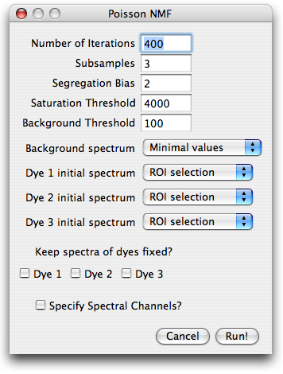
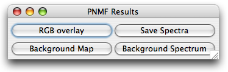

PoissonNMF - blind source separation of fluorescence microscopy data
Table of Contents
- Introduction
- Installation
- Data
- Workflow
- Spectra Library
- References
Back to the main page.
PoissonNMF is an ImageJ plugin to decompose spectrally resolved fluorescence
microscopy data into the contribution of the labels under conditions where the
spectra are not or only inaccurately known. It employs non-negative matrix
factorization [1], suitably modified to shot-noise dominated
data. The details of the algorithm are discussed in [2].
Step-by-step tutorial using an example with 3 dyes can be found here.
To install the plugin, copy the PoissonNMF_.jar file into the plugin folder of
your ImageJ distribution. The plugin allows to save spectra to a library
and reuse them for future analysis, see below.
For this feature to work, the spectra have to be saved in a folder named SpectraLibrary
at the top level of the plugins folder of the ImageJ distribution.
top
PoissonNMF expects an image stack or an hyperstack with the default ImageJ order of
dimensions, i.e. the 3rd dimension of the stack has to correspond to different spectral channels,
whereas the 4th and 5th dimensions could be depth or time. The stack is internally converted
to a 32bit stack, such that the necessary memory can increase quite drastically.
If no stack is provided, the plugin asks the user to specify the type of data to be used (Regular Stack,
Zeiss LSM data, Leica SP2 data) and then displays and open dialog. In case of Zeiss LSM data
and Leica SP2 data, the plugin attempts to read the channel wavelength from the
meta data provided by these formats.
top
The analysis of an image stack with poissonNMF proceeds in a one dimensional fashion. The
user is prompted for necessary and optional input using several dialog windows, which are
going to be explained in the following. Most values of in the dialog boxes are preset
to default values or those of the previous run.
top
 Upon invoking poissonNMF from the plugin menu, the user is asked for the number
of labels that contribute to the image stack. This number is restricted to the range
2-10. In practice, more than 4 sources will rarely yield satisfactory results.
top
After specifying the number of sources, the user is prompted for parameters
needed for preprocessing of the data, initial conditions and runtime options.
Upon invoking poissonNMF from the plugin menu, the user is asked for the number
of labels that contribute to the image stack. This number is restricted to the range
2-10. In practice, more than 4 sources will rarely yield satisfactory results.
top
After specifying the number of sources, the user is prompted for parameters
needed for preprocessing of the data, initial conditions and runtime options.
Number of iterations and subsampling.
To speed up convergence, the poissonNMF applies the update rules in several stages
to subsamples of the data. The estimates for the spectra obtained with one subsamble
are used as initial conditions for the next larger subsample. The number of such stages can be specified in
subsamples field. From one subsample to the next, the amount of data used by the algorithm
is increased by a factor of 10 in such a way that the last subsamples comprises the entire data set.
The total number of times the iterative update rules are applied to the data can also be specified.
The number of iterations for larger subsamples is smaller (a factor 2 between successive subsamples).

Segregation bias. In some circumstances, in particular when spectra
overlap strongly, the NMF solution is not unique and NMF tends to estimate too narrow
spectra and incompletely separated sources. This tendency can be counteracted
by a segregation bias that penalizes the overlap of the estimated label distributions.
Suitable weights of the segregation bias are of order 1. Too high segregation bias will
yield in a faulty decomposition. To turn off the segregation bias, set its weight to zero.
Saturation threshold.
Saturated or nearly saturated pixels have
distorted emission spectra and therefore have to be excluded from the
analysis. If the signal in any channel at a certain pixel is above this
parameter value, the pixel is excluded.
Background threshold.
Very faint pixels carry little information
and are likely dominated by noise, autofluorescence or similar contaminants. It is
therefore advisable to limit the spectra estimation to reasonably strong
pixels. Any pixel, whose intensity is below this threshold in every channel is therefore excluded.
This thresholding is applied after the constant background is substracted.
Background spectrum and initial spectra.
Before the algorithms can process the data, the background spectrum has
to be substracted and spectra initialized with a set of start spectra.
Both, background and spectra can be specified in a variety of ways, that can be selected
from a pull-down menu. The choices for the background are:
- Minimal values: the minimum across the image is determined for each channel.
- ROI selection: the user is prompted for a ROI
which contains background signal only.
- Manually: the user is prompted for the background strength in each channel
- Flat: the user prompted for one number, which is assumed to describe the background in all channels.
Similar choices are available for the initial spectra:
- Gaussian: The spectra are initialized with a Gaussian with predefined width and position.
- ROI selection: the user is prompted for a ROI
which contains predominantly the corresponding dye.
- Manually: the user is prompted for the emission spectrum
- Library spectrum: If the spectra library is set up correctly and contains spectra, these spectra
are available at the bottom of the pull down menu.
If the user selected items that require further user input such as ROIs or numbers,
additional dialogs will appear after closing the parameter dialog.
Keep spectra fixed?
If some spectra are known accurately, one can fix them during the optimization and
iterate only the remaining spectra. To keep the spectrum of a dye fixed, check
the appropriate boxe. If all
dyes are kept fixed, poissonNMF updates only the concentrations and thereby produces a non-negative
iterative linear unmixing of the signal. This unmixing differs from standard least squares
unmixing by assuming Poisson noise.
Specify spectral channels?
PoissonNMF does not need to know the boundaries of the spectral channels for the core
optimization. It does, however, rely on this information to display the spectra
and read spectra from the spectra library. If this option is checked, the user will
be prompted for a dialog where the channel boundaries can be entered.
top
After closing the parameter dialog and providing the optional input, the plugin
can decomposes the image stack. While the plugin is running, it continuously displays
the current spectra and the progress of the calculation in ImageJ toolbar. The
plugin can be cancelled at any time. Furthermore, the current spectra can be used
to produce a least square solution of the entire stack.

Once poissonNMF has completed the optimization loop, it displays an image stack
containing the label distributions. Different labels correspond to different values of
the third dimensions, with all other dimensions being the same as the input data stack.
PoissonNMF also opens a dialog with four buttons for further processing of the results.
The button RGB overlay allows to produce a RGB of the current slice of the stack. The user
is asked for an assignment of dyes to color channels.
The button background map presents the user a RGB image of the current slice, pixels
classified as background are blue, those used for poissonNMF are green and saturated
pixels are red. Furthermore, the user can save the estimated spectra and display the
background spectrum.
top
PoissonNMF can use literature spectra or spectra determined in previous
runs, for example as start spectra or as fixed spectra while
optimizing other unknown spectra. For a spectrum to be available in PoissonNMF,
it has to be placed in the folder SpectraLibrary located in the
plugins folder of ImageJ. The files are assumed to be text files with the
wavelength in column one and the emission in column two, conform with the
output format of PoissonNMF. Files containing emission spectra have to end on .emn.
A sample library of spectra can be found here.
top
References
- D.D. Lee and H.S. Seung. Learning the parts of objects by non-negative matrix factorization. Nature, 40:788-791, 1999.
- R.A. Neher, M. Mitkovski, F. Kirchhoff, E. Neher, F.J. Theis, and A. Zeug. Blind source separation techniques for the decomposition of multiply labeled fluorescence images. Biophysical Journal, vol. 96 (9) pp. 3791-800, 2009.
top